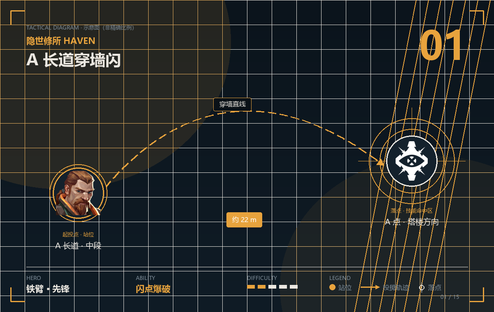
POINT 01 · 闪点爆破
A 长道穿墙闪
闪点爆破 · 约 22 m · 难度
- 站位
- 站在 A 长道中段的墙后，贴住墙，确保身体完全在掩体后。
- 瞄点
- 准星对准 A 长道尽头的墙面中上部，按住技能键让闪从墙里穿出去，在 A 塔楼方向炸开。
- 落点
- A 点塔楼和包点方向同时白屏，队伍贴墙推进零风险。
- 时机
- 队伍贴到 A 长道中段、准备同步进点的瞬间。
提示 铁臂的闪是穿墙的，隔一堵墙放比露头放安全得多。闪爆前别自己先露头。
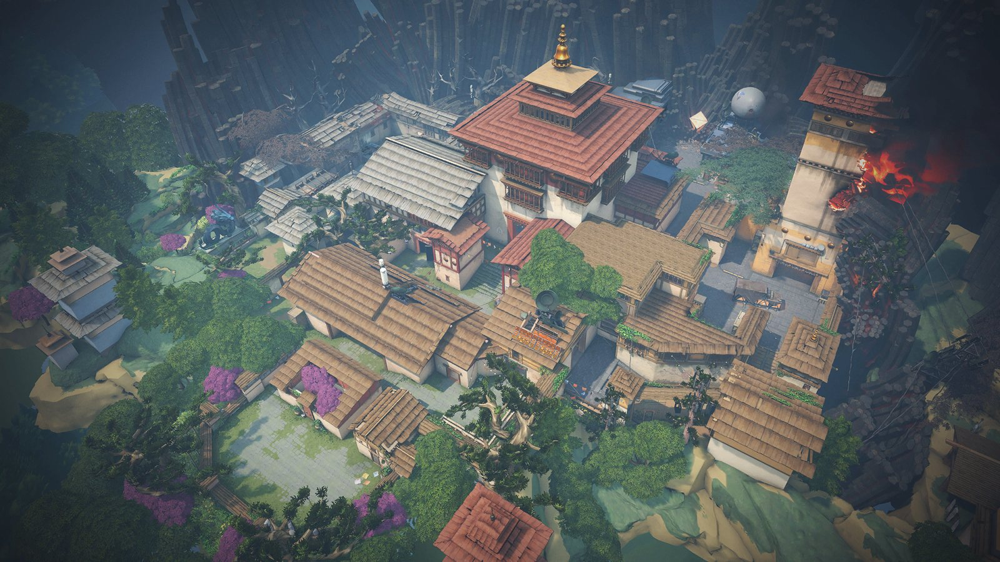
隐世修所是唯一一张三包点地图：A 长道、B 窗口、C 长道三条进攻线各自独立，防守方永远少一个人。这张图的关键不是「封死一个点」，而是「用最少道具拖住两条线」。
隐世修所是三条进攻线的三包点地图，铁臂的闪现加地震可以在任何一条线开团，是这张图最强的「开团机器」——他的技能全部穿墙，等于免费获得一次先手。
山崩地陷SKILL 2剧震余波SKILL C惊雷卷地ULT
闪点爆破 · 约 22 m · 难度
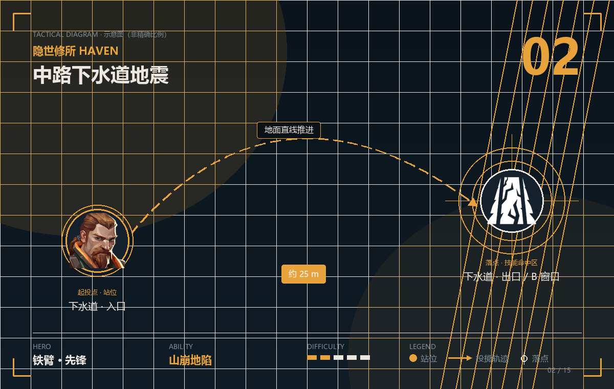
山崩地陷 · 约 25 m · 难度
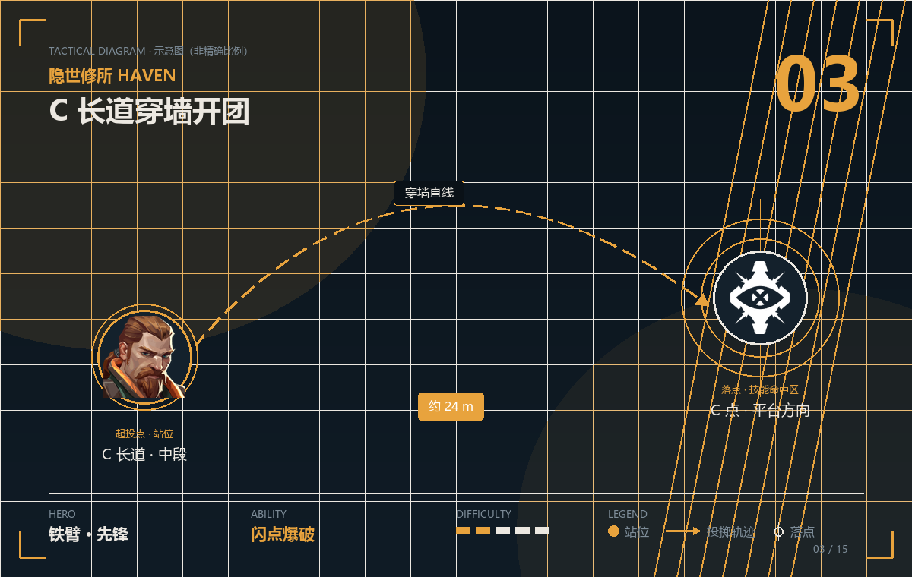
闪点爆破 · 约 24 m · 难度
隐世修所三包点、转点距离长，星礈可以提前布好五颗星，随时在三条线之间切换烟雾——她的强度不在「一次封死」，而在「对面永远猜不到你下一秒封哪条线」。
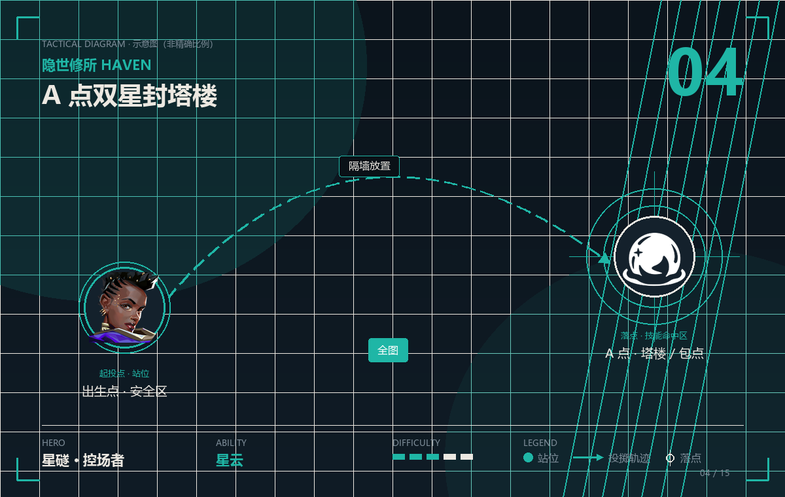
星云 · 全图 · 难度
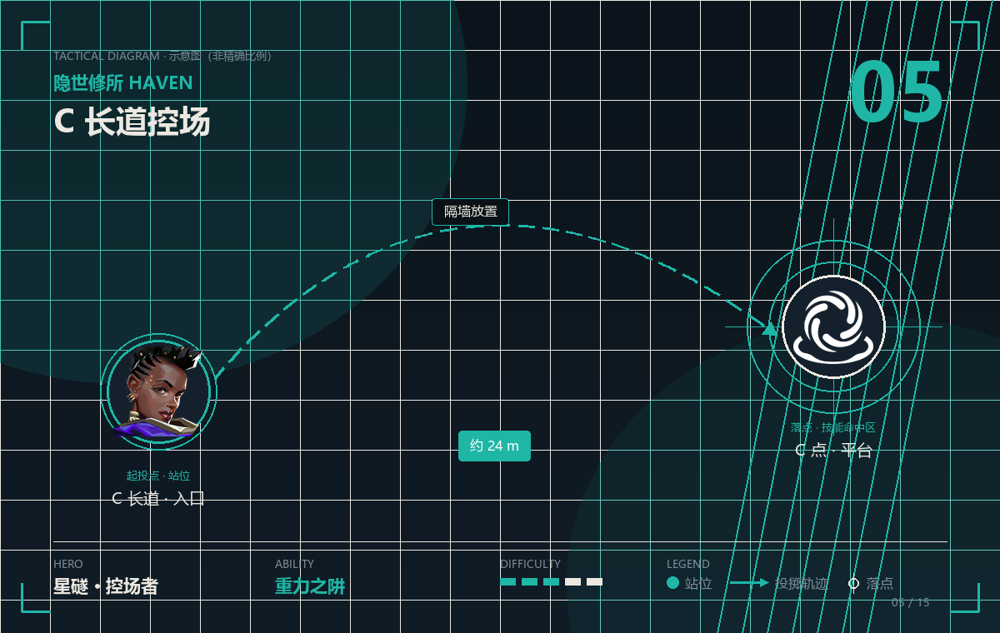
重力之阱 · 约 24 m · 难度
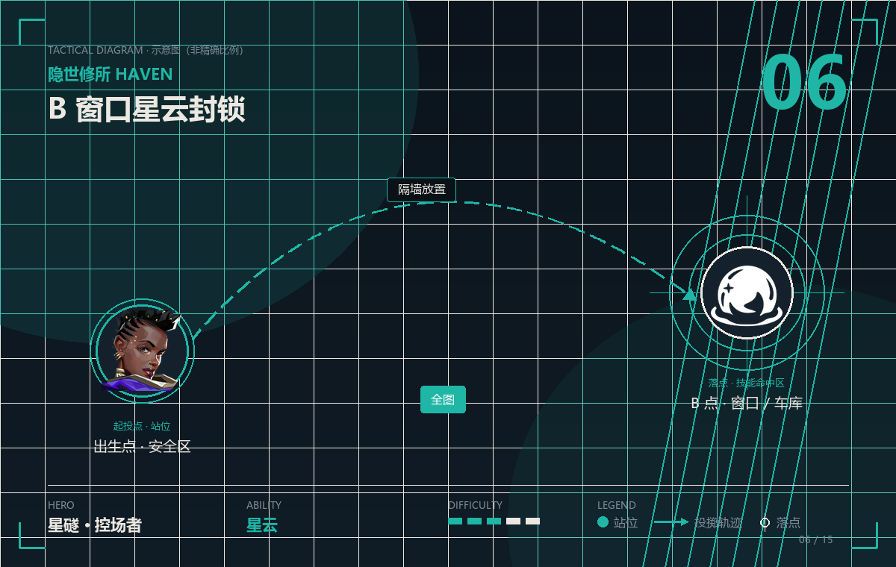
星云 · 全图 · 难度
隐世修所的 B 点是最容易被快攻的包点，贤者的玉城可以一秒钟把 B 窗口封死——这是这张图流传最广、也最好用的一手防守操作。
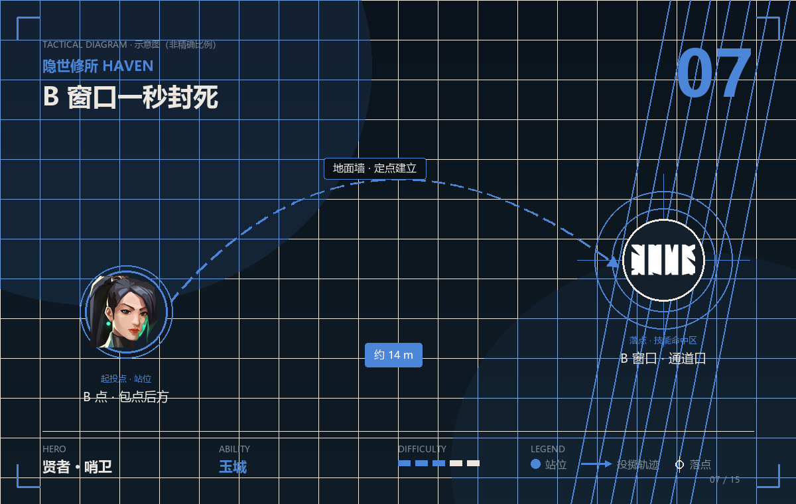
玉城 · 约 14 m · 难度
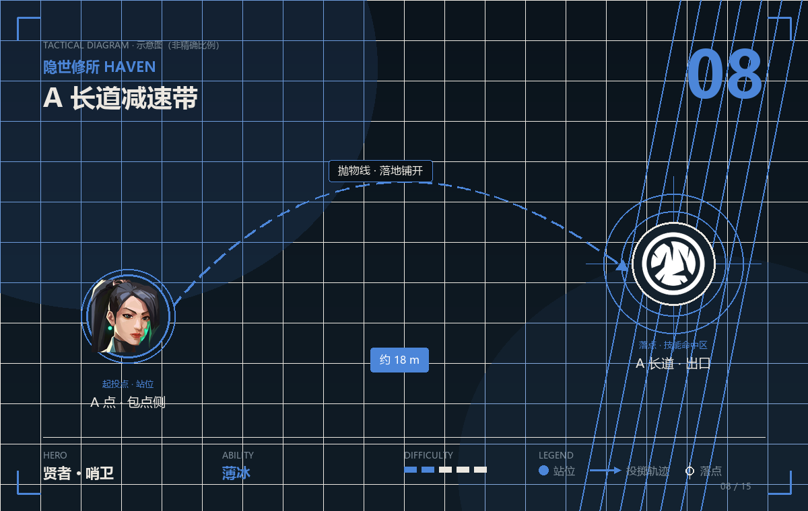
薄冰 · 约 18 m · 难度
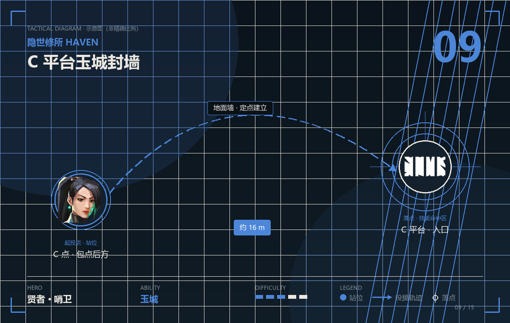
玉城 · 约 16 m · 难度
隐世修所的 C 长道又宽又直，钢锁的声感陷阱加重力捕网，可以把整条 C 线彻底锁死——她的点位逻辑是「让对面一进长道就被发现，一出来就被抓住」。
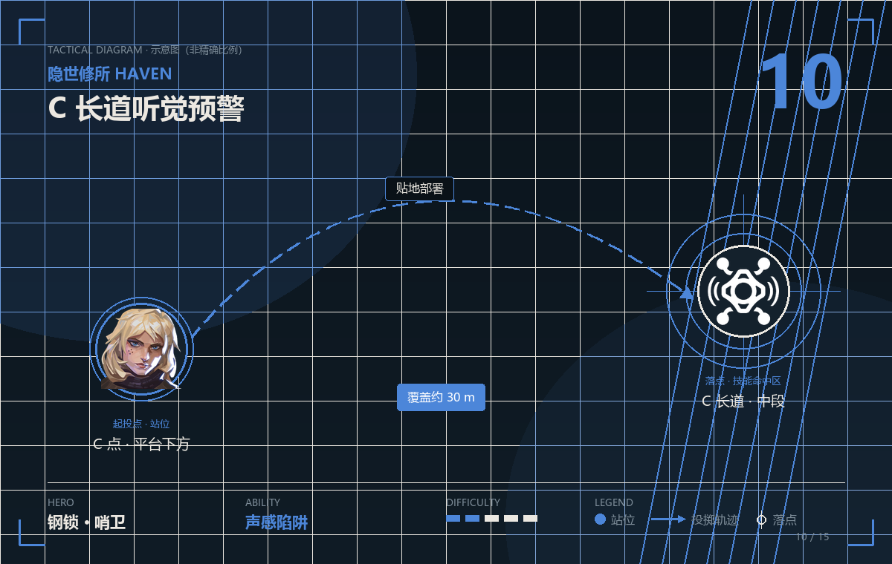
声感陷阱 · 覆盖约 30 m · 难度
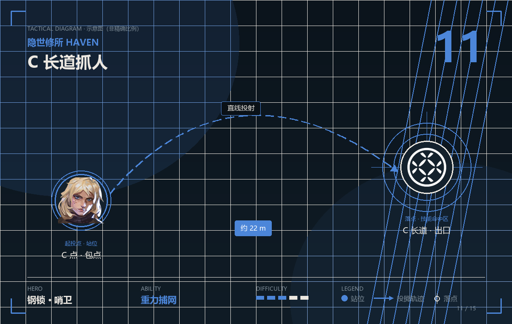
重力捕网 · 约 22 m · 难度
隐世修所的 B 窗口和 A 塔楼都是「一对一」的好位置，芮娜的单挑和回血能力，让她特别适合守这种「敌人必须一个个过门」的点。
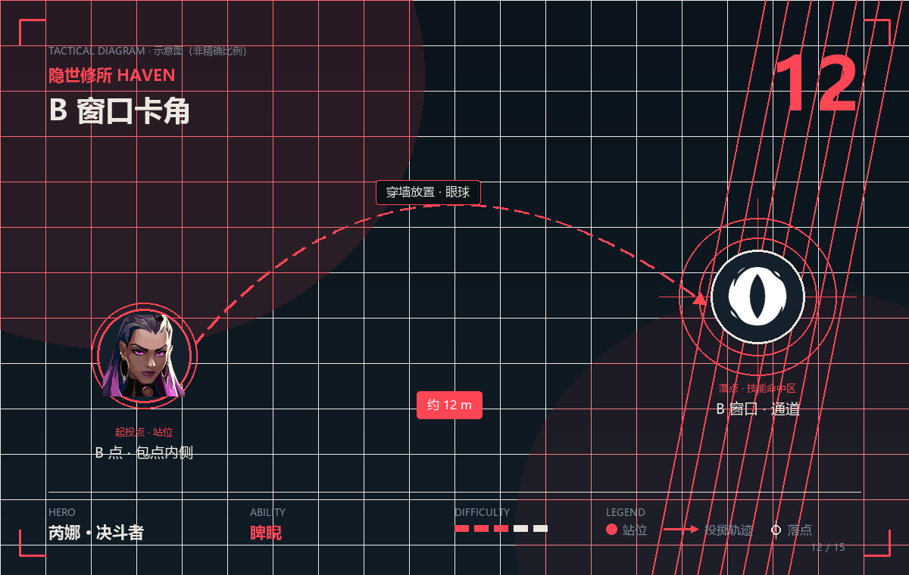
睥睨 · 约 12 m · 难度
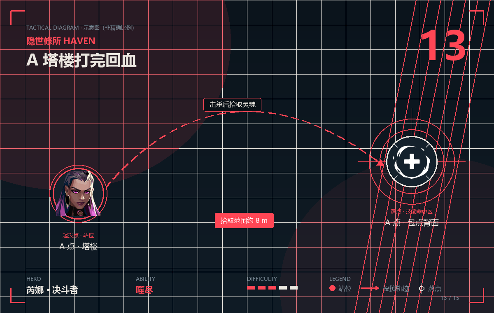
噬尽 · 拾取范围约 8 m · 难度
隐世修所三个包点之间距离远，霓虹的高速通道可以瞬间切点，是这张图最好的「快速转点」决斗者——她的价值是「10 秒内出现在另一个包点」。
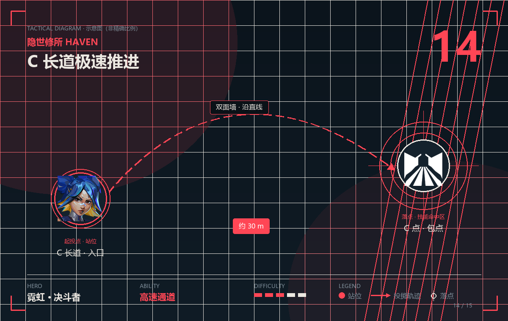
高速通道 · 约 30 m · 难度
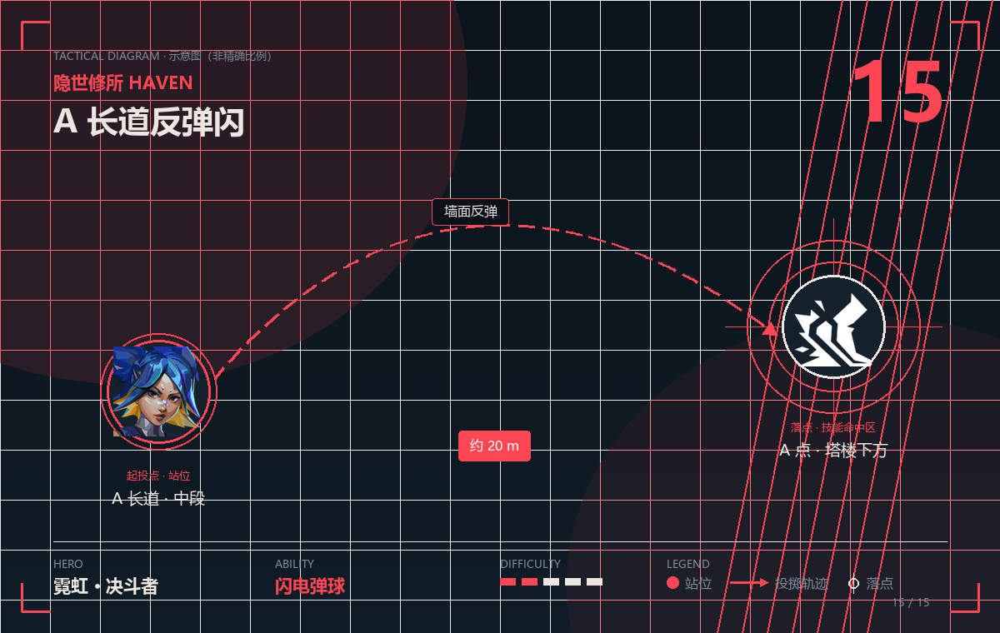
闪电弹球 · 约 20 m · 难度